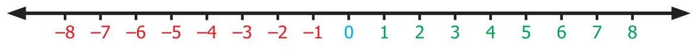
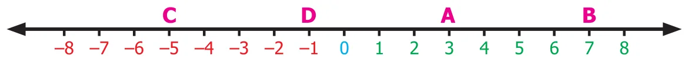

Chapter 1
NUMBER SYSTEM
\(a \times (b+c) = (a \times b) + (a \times c)\)
Learning objectives
- To understand the concept of addition and subtraction of integers.
- To understand the concept of multiplication and division of integers.
- To understand the properties of four fundamental operations applied to integers.
- To solve applied problems using the four fundamental operations on integers.
Recap
Integers are the collection of natural numbers, zero and negative numbers.
We denote this collection by \(\mathbb{Z}\).
Negative integers are represented on the number line to the left of zero and positive integers to the right of zero.

Fig. 1.1
Every integer on this number line is placed in an increasing order from left to right.
The integers at each point A, B, C, D in the figure given below are \(A = +3\), \(B = +7\), \(D = -1\) and \(C = -5\).

Fig. 1.2
Try these
- Write the following integers in ascending order:
\(-5,\ 0,\ 2,\ 4,\ -6,\ 10,\ -10\) - If the integers \(-15,\ 12,\ -17,\ 5,\ -1,\ -5,\ 6\) are marked on the number line then the integer on the extreme left is \(\underline{\qquad\qquad}\).
- Complete the following pattern:
\(\underline{\qquad},\ -40,\ \underline{\qquad},\ \underline{\qquad},\ -10,\ 0,\ \underline{\qquad},\ 20,\ 30,\ \underline{\qquad},\ 50.\) - Compare the given numbers and write "<", ">" or "=" in the boxes.
(a) \(65 \ \square\ -65\) (b) \(0 \ \square\ 1000\) (c) \(-2018 \ \square\ -2018\) - Write the given integers in descending order :
\(-27,\ 19,\ 0,\ 12,\ -4,\ -22,\ 47,\ 3,\ -9,\ -35\)